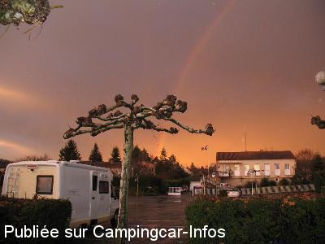

ASN = Aire de services avec stationnement nuit possible de :
PUY L'ÉVÊQUE
(N° 688)
Accès/adresse :
Rue Henri Dunant
46700 PUY L'ÉVÊQUE
46700 PUY L'ÉVÊQUE
Latitude : (Nord) 44.50683° Décimaux ou 44° 30′ 24′′
Longitude : (Est) 1.13542° Décimaux ou 1° 8′ 7′′
Tarif : Gratuit
Type de borne : Artisanale
Services :


Tous commerces à 300 m
Autres informations :
Ouvert toute l'année sauf la 2° quinzaine d'août
9 emplacements
Tel : +33(0)565 308 145
Le 25/03/2014 par jipé
Le 06/06/2013 par lelito

Le 10/01/2010 par popol609
de
Robin Jean
le 25/03/2014 :
Aire très calme,en Mars 2014,pas d'eau, impossible de faire le plein.
Aire très calme,en Mars 2014,pas d'eau, impossible de faire le plein.
de
Sybrub
le 26/08/2013 :
Joli village découvert en aout 2013,aire fermée (nous le savions avant de venir) nous avons passé la nuit avec d'autres CC sur un parking à coté terrain de sport afin d'assister au superbe feu d'artifice. Mais le réveil, sympa : des camions y viennent très tot et y font des allers et venues dans un vacarme pas possible et ce dès 6h du matin.
Joli village découvert en aout 2013,aire fermée (nous le savions avant de venir) nous avons passé la nuit avec d'autres CC sur un parking à coté terrain de sport afin d'assister au superbe feu d'artifice. Mais le réveil, sympa : des camions y viennent très tot et y font des allers et venues dans un vacarme pas possible et ce dès 6h du matin.
de
guytou 44
le 02/06/2011 :
tres joli petit vilage l'aire est tres calme face a la gendarmerie le tout gratuis avec en prime une vue magnifique sur la riviere mais pour çà il faut marcher pendant au moins trois cent metres lol merci puy l'eveque
tres joli petit vilage l'aire est tres calme face a la gendarmerie le tout gratuis avec en prime une vue magnifique sur la riviere mais pour çà il faut marcher pendant au moins trois cent metres lol merci puy l'eveque
de
f claus
le 09/04/2011 :
vous pouvez faire le plein d'eau sur cette aire et vidanger, puis continuer cette route qui monte, la D 28 vers Cassagnes et au bout de 3 kms, vous arrivez au Camping l'Evasion.
vous pouvez faire le plein d'eau sur cette aire et vidanger, puis continuer cette route qui monte, la D 28 vers Cassagnes et au bout de 3 kms, vous arrivez au Camping l'Evasion.
de
popol609
le 24/12/2009 :
Aire calme, mise en "hors service" lors de notre passage.
Aire calme, mise en "hors service" lors de notre passage.
de
Ambroise
le 10/05/2009 :
Nous avons couché sur le parking de la gendarmerie, WC publics (propres), vidanges et plein d'eau gratuits. Bon d'accord, le décor n'est pas très fun, mais on ne peut pas tout avoir... Un bon souvenir, joli village.
Nous avons couché sur le parking de la gendarmerie, WC publics (propres), vidanges et plein d'eau gratuits. Bon d'accord, le décor n'est pas très fun, mais on ne peut pas tout avoir... Un bon souvenir, joli village.
de
wilson 33
le 22/08/2008 :
Ville sympa, à voir, aire fonctionnelle, rien à redire. Merci à Puy l'Eveque de penser à nous
Ville sympa, à voir, aire fonctionnelle, rien à redire. Merci à Puy l'Eveque de penser à nous